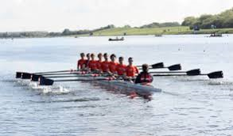
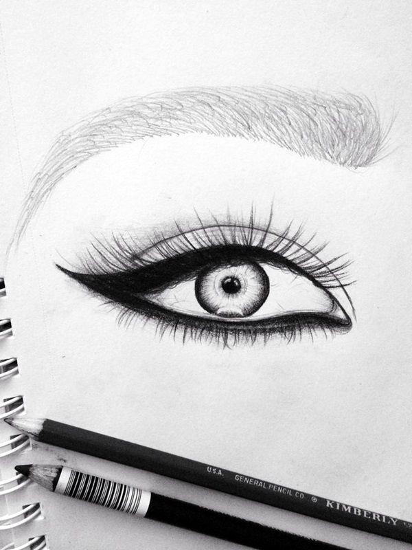

My Hobbies
Rowing

I started rowing around 2 years ago and would say I have become quite decent at it. I decided to learn in because it's a very important life skill in terms of an emrergency. In addition, I like it because it's really good for muscle toning and keeps me fit.
Drawing

I would say I am pretty decent when it comes to drawing too. I try to draw as much as I can in my free time. Also, I can't sit still and do my work; I have to doodle. Thus, drawing is a really good was to get that urge out because it keeps me focused.